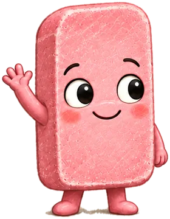

Una plataforma de cartillas interactivas: un cuaderno por grado donde lo que el niño aprende se dibuja solo. Los niños practican en casa, en el celular de la familia, con misiones cortas guiadas por Goma y sus amigos. Usted trabaja en clase con proyector y materiales imprimibles, y sigue el avance de su grupo.
Abra el correo de invitación, toque "Aceptar la invitación" y elija su contraseña. De ahí en adelante entre siempre por:
cuadernodegoma.pages.dev/adultosEn Grupos, escriba el nombre (por ejemplo 3B) y el grado. La plataforma le asigna un código de grupo, el que los niños usan para entrar.
Escriba solo el apodo o el primer nombre de cada niño; puede pegar la lista completa, uno por línea. Elija su personaje. No se piden apellidos, correos ni fotos.
Cuando reciba la autorización firmada, márquela junto al nombre del niño. Sin ella, el niño no entra con tarjeta.
Mientras tanto puede jugar como invitado, sin guardar datos.
En su grupo, toque Tarjetas de entrada. Cada tarjeta trae el código del grupo, un código QR y la clave de tres dibujos del niño. La clave solo aparece en la hoja impresa: entréguela a la familia.
Abre cuadernodegoma.pages.dev en el celular, toca "Tengo una tarjeta", escanea el QR o escribe el código, toca su cara y sus tres dibujos. Varios hermanos pueden usar el mismo celular: cada uno conserva su avance.
Proyecte las láminas, los juegos y las canciones del tema desde Proyectar; el telón nunca muestra datos de los niños. Dé calcomanías desde su celular con dos toques:
Las calcomanías reconocen conductas, no solo aciertos, y nunca se quitan.
En Planear encuentra, por tema, la guía, el planeador de cada clase de 55 minutos (organizados por los periodos del pensum del MEN), las láminas, las fichas, las canciones con su letra y la prueba del tema. Todo se puede ver en pantalla, proyectar o imprimir en carta y media carta.